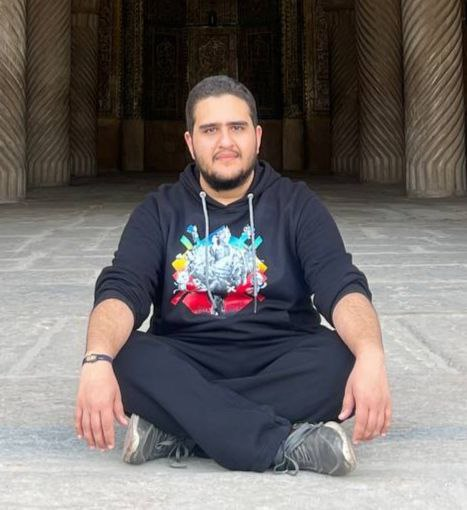

Alireza Foroodnia
Final Year Computer Engineering Student | Sharif University of Technology
Final Year Computer Engineering Student | Sharif University of Technology
Hello! I’m Alireza Foroodnia, a final-year Computer Engineering student at Sharif University of Technology, Tehran, Iran. My research focuses on High-Performance Computing, Parallel Computing, and Hardware Development. I have experience working with various architectures and simulators like Tensor Cores, GPGPU-Sim, and SSDs.
Integrated a Vector Unit into the Sargantana RISC-V processor and developed ISA instructions using SystemVerilog.
Implemented a cache prefetcher to enhance memory hierarchy for RISC-V projects.
Enhancing NVMeVirt emulator to support interconnection network capabilities for improved SSD performance.
You can reach me via email at: alirf2077@gmail.com
Or connect with me on GitHub.